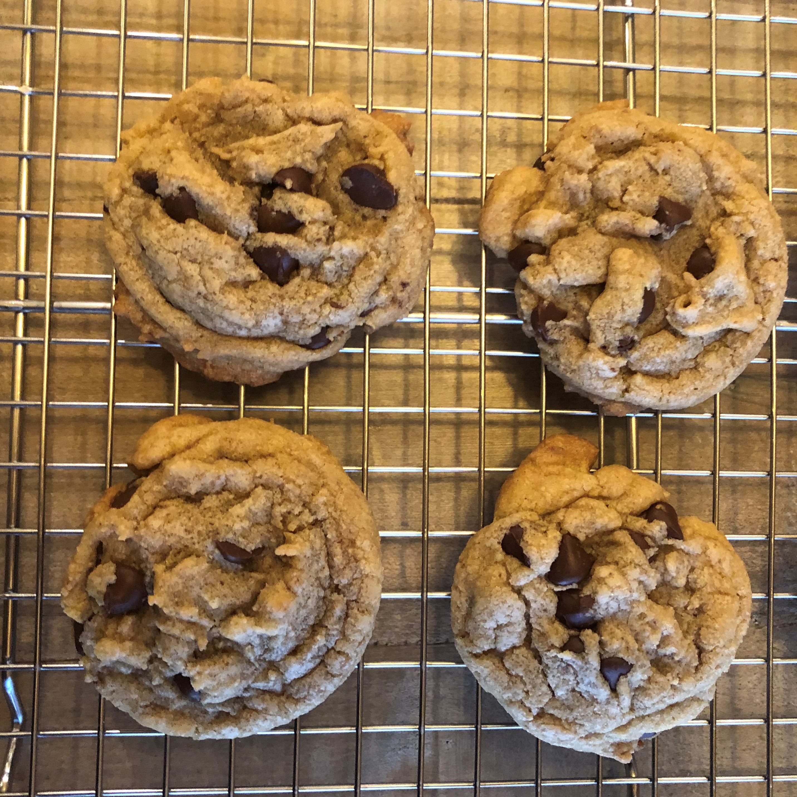

NANA'S CHOCOLATE CHIP COOKIES
Cookie Dough
INGREDIENTS
- 1 cup granulated sugar
- 1 cup brown sugar
- 1 cup butter, softened
- 2 eggs
- 1 1/2 tsp vanilla extract
- 1 tsp baking soda
- 1 tsp salt
- 3 cups all-purpose flour
- 12 oz semi-sweet chocolate chips
DIRECTIONS
- Preheat oven to 375 degrees F.
- Cream together the butter, sugar, and brown sugar. Add the eggs and vanilla extract and mix until just incorporated.
- Sift together the baking soda, salt, and flour.
- Slowly add the flour mixture to the sugar/butter mixture while stirring.
- Add the chocolate chips and mix until incorporated.
- Drop by rounded spoonfuls onto baking sheets, about 2 inches apart. Bake for 8 to 10 minutes, shorter for a softer cookie.
- Let the cookies rest on the baking sheet for a few minutes before transferring them to wire rack to cool.